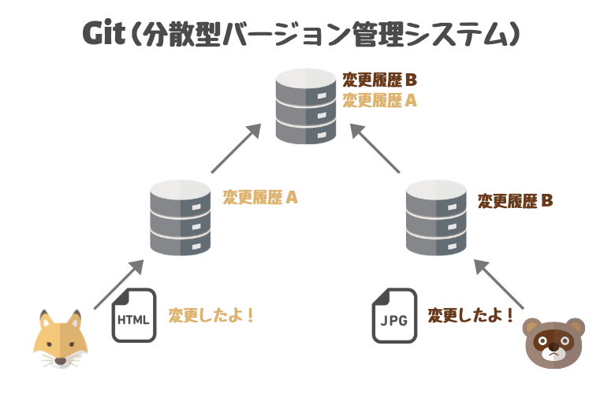
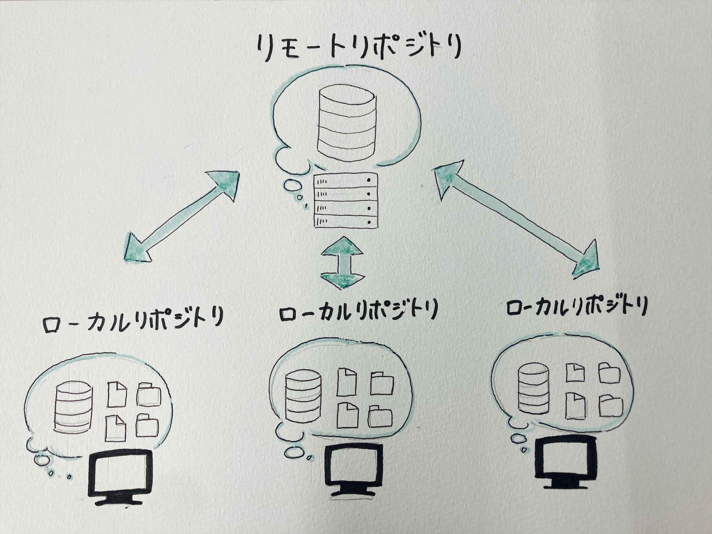
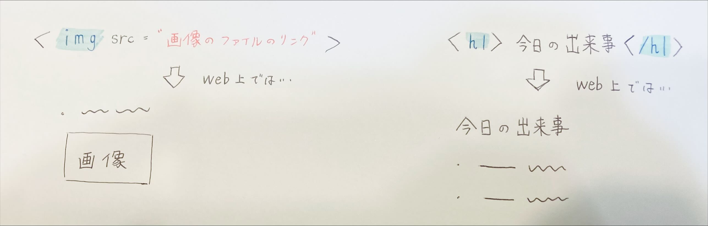

GITとは、
コンピュータに命令を与える文字列（ソースコード）の変更を追跡・管理するためのツールのことを言います。

この画像から見て分かるように、
ソースコードに対して行った変更を複数人で共有し、効率良く作業を勧めることができます。
GITを利用することで一体どういうことが可能になるのでしょうか？具体的に見ていきましょう。
GITを利用することで可能になることとして、主に以下のことが挙げられます。
- プロジェクトの変更履歴を記録することで、変更の履歴を確認することはもちろん過去の状態に戻す事が簡単にできる。
- 複数の人が同時に作業し、変更を統合することができる。
- 新機能の開発やバグの修正などを、独立したブランチで作業することができるため、本番用のコードに影響を与えることなく
安全に作業することができる。
- ファイルの履歴が記録されているため、ファイルを誤って削除してしまったとしても復元することができる。
『リポジトリとは？』
リポジトリとは、
ファイルやディレクトリの状態が記録されている部分のことを言います。
そして、GITには、以下の2種類のリポジトリが存在します。
- ローカルリポジトリ
⇒各ユーザーが使用し、各々で作業するリポジトリ
- リモートリポジトリ
⇒自分の作業内容や、ほかの人の作業内容を共有して利用できるリポジトリ
下の画像を見てみると、各々がリモートリポジトリで作業し、リモートリポジトリに共有していることが分かります。
このように、ユーザーは二つのリポジトリを行き来して作業するのです。

『作業の流れ』
- 自分のファイルを編集
- そのファイルをインデックスに登録
- インデックスに登録した内容をローカルリポジトリに登録
- ローカルリポジトリの内容を、リモートリポジトリに登録
以上が、リポジトリを用いた作業の主な流れになります。
【HTMLとは何？】
ウェブページは、
内容（HTMLファイル）、見た目（CCSファイル）、動作（JSファイル）、絵（画像ファイル）の4つの要素で構成されています。
そしてその内のHTML
ファイルはページの内容という、4つの要素の中でも中核を成す部分です。
HTMLとは、「Hyper Text Markup Language」の略で、
ウェブページを作成するための言語です。
このHTMLによって、ウェブページを構成したり、画像の挿入やリンクの作成をすることができます。
『HTMLタグとは？』
HTMLタグとは、
表示する文字に意味を持たせる為の文字列です。
見出しや文字の大きさ、色など、
ウェブページをどうやって構成していくか指示する役割を担っています。

上にある画像のように、img タグを使えば画像の挿入ができ、h1タグを使えば見出しを作ることができます。
他にもHTMLタグはたくさん存在します。
こちらの
HTMLタグ一覧から見てみてください。
【参考文献】